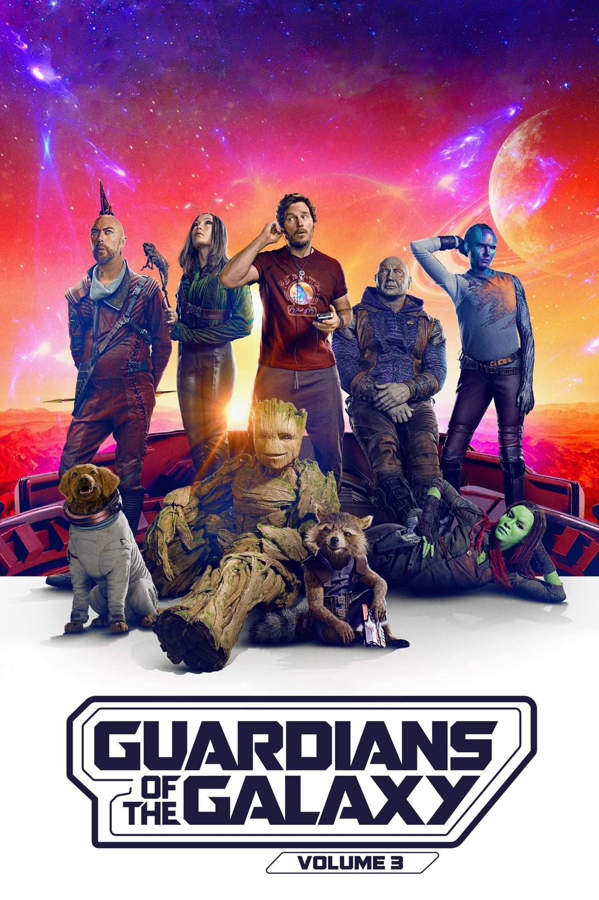
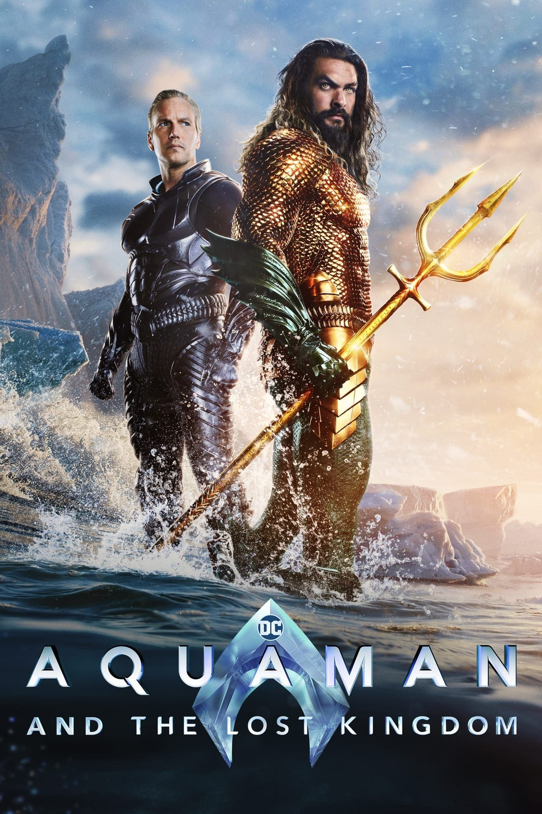
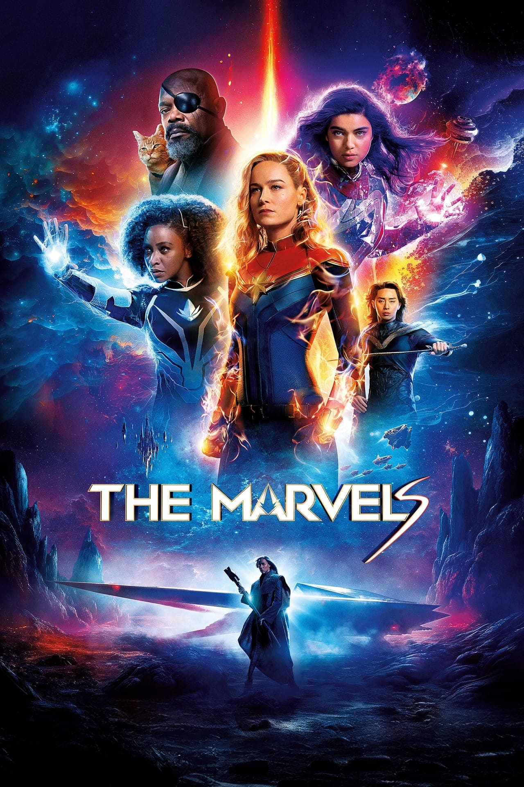

Guardian Of Galaxy Vol 3 (2023)

Saya menikmati film ini, namun saya harus mengatakan bahwa saya akan
lebih menikmatinya jika film ini bukan film komedi superhero. Film
ini penuh dengan hal-hal konyol, mengerikan dan, seperti biasa
dengan Hollywood saat ini, tidak terlalu cerdas dalam hal humor.
Paling banter hanya slapstick dan sebagian besar hanya
menjengkelkan. Tentu saja tidak terlalu lucu sepanjang waktu. Tentu
saja sesekali saya tertawa, tapi itu hanya satu dari tiga kali. Dan
jangan mulai dengan Quill. Dia orang yang bodoh, brengsek dan tidak
lucu. Dia sangat merusak film ini. Film ini memberikan satu aspek
yang sangat penting dalam film superhero, yaitu aksi dan efek
khusus. Saya sangat menyukainya dan sebagian besar kenikmatan saya
terhadap film ini berasal dari hal ini.
Ceritanya sebenarnya cukup oke dan cukup keren untuk mendapatkan
cerita tentang Rocket. Si penjahat, ya, dia benar-benar salah satu
bagian terbaik dari film ini. Akhirnya mereka berhasil menyatukan
seorang penjahat yang benar-benar bonafid, megalomaniak, psikopat
dan genosida dengan banyak karisma (buruk). Bahkan jika dia,
meskipun jenius dalam menciptakan semua jenis kreasi biologis,
termasuk spesies baru, tidak dapat memperbaiki wajahnya sendiri
alih-alih mengenakan topeng lateks yang konyol. Benarkah? Itu hanya
penulisan naskah Hollywood yang bodoh.
Secara keseluruhan, film ini merupakan film yang menyenangkan, sarat
dengan efek khusus, roller coaster aksi dan, yang cukup mengejutkan
dalam hal Marvel, tidak sarat dengan khotbah. Dan senang rasanya
bisa melihat Sylvester Stallone lagi meskipun hanya sebentar. Jika
mereka mengurangi kekonyolan, atau meminta seseorang yang cerdas
untuk menulis lelucon, film ini akan mendapatkan bintang lain dari
saya.
Rating:
Reviu Film
Daftar film yang telah di reviu.
Aquaman: The Lost Kingdom (2023)

Aquaman and the Lost Kingdom merupakan perpisahan yang 'baik'
untuk DCEU. Chemistry Jason Momoa dan Patrick Wilson yang lucu
menawarkan banyak momen yang menghibur, karena hubungan karakter
mereka yang kompleks menjadi pusat perhatian sebagai kekuatan
tematik utama. Sebagian besar konsisten dari sudut pandang visual,
menampilkan set piece yang dieksekusi dengan baik yang akan
membuat para penggemar yang lebih kecanduan aksi terpuaskan. Namun
demikian, ketergantungan yang berlebihan pada eksposisi, struktur
narasi yang berantakan, dan keputusan kecil lainnya yang patut
dipertanyakan mengurangi keterpaduan cerita secara keseluruhan.
Sebagai seri terakhir, film ini merupakan cermin yang cukup akurat
yang merefleksikan pasang surutnya jagat sinematik secara
keseluruhan. Meskipun jauh dari kata sempurna, film ini merangkum
esensi dari DCEU - sebuah perjalanan yang dipenuhi dengan beberapa
kemenangan, banyak kesempatan yang terlewatkan, dan bencana yang
tidak dapat dipahami.
Rating:
The Marvels

The Marvels adalah sebuah film yang menampilkan beberapa kekuatan
dan kelemahan MCU yang terkenal. Film ini bergelut dengan masalah
naskah dan penyuntingan yang menghalangi kohesi naratif dan
kedalaman karakternya, selain durasi yang terlalu pendek yang
tidak membantu penjahatnya. Untungnya, film ini unggul dalam hal
pemeran ensembel dan chemistry mereka - Iman Vellani adalah MVP
yang jelas - potongan-potongan adegan aksi yang kreatif, efek
visual yang mengesankan, kostum yang memukau, dan humor yang tepat
waktu, yang semuanya mendorong film ini ke pelabuhan yang aman.
Nia DaCosta menawarkan sebuah film superhero yang ringan dan
menghibur yang mungkin tidak terlalu bagus, namun masih menyisakan
ruang untuk perbaikan di seri-seri selanjutnya.
Rating: